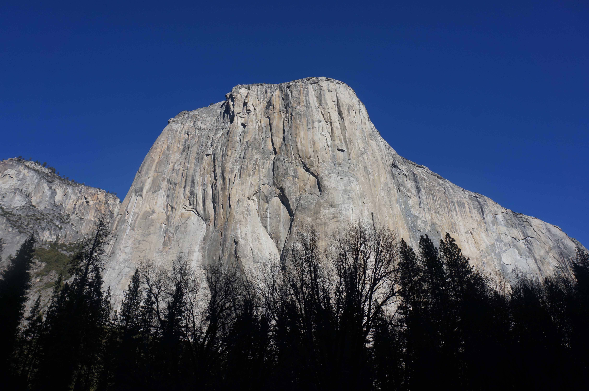
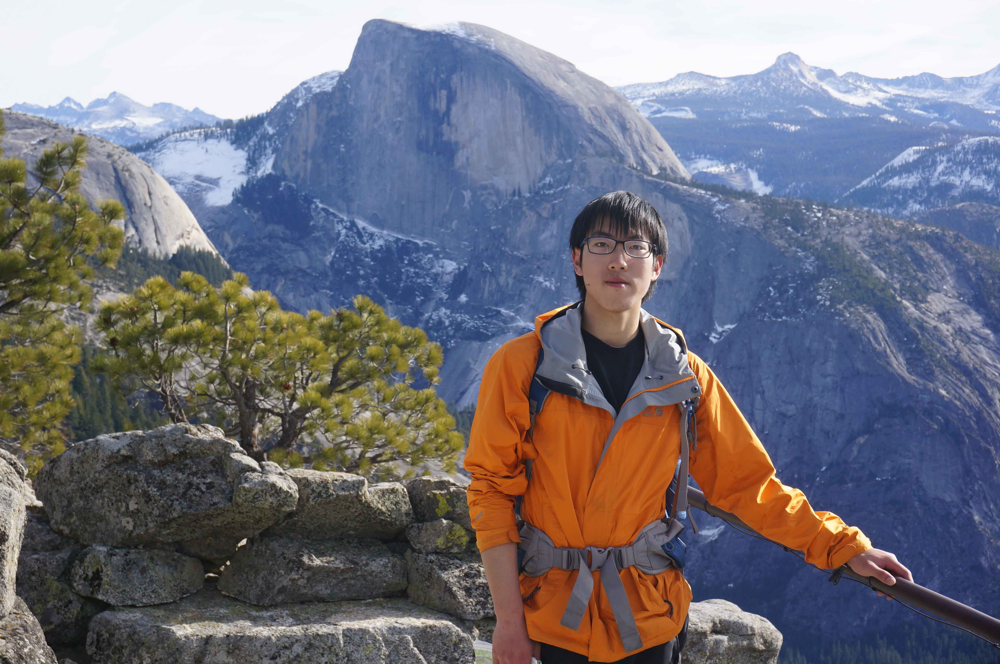
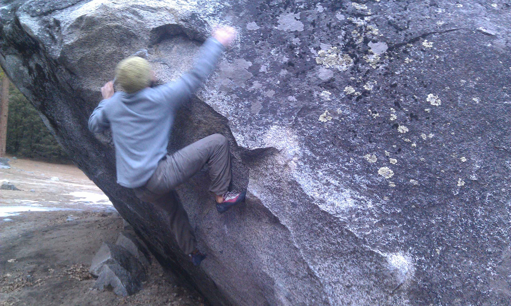
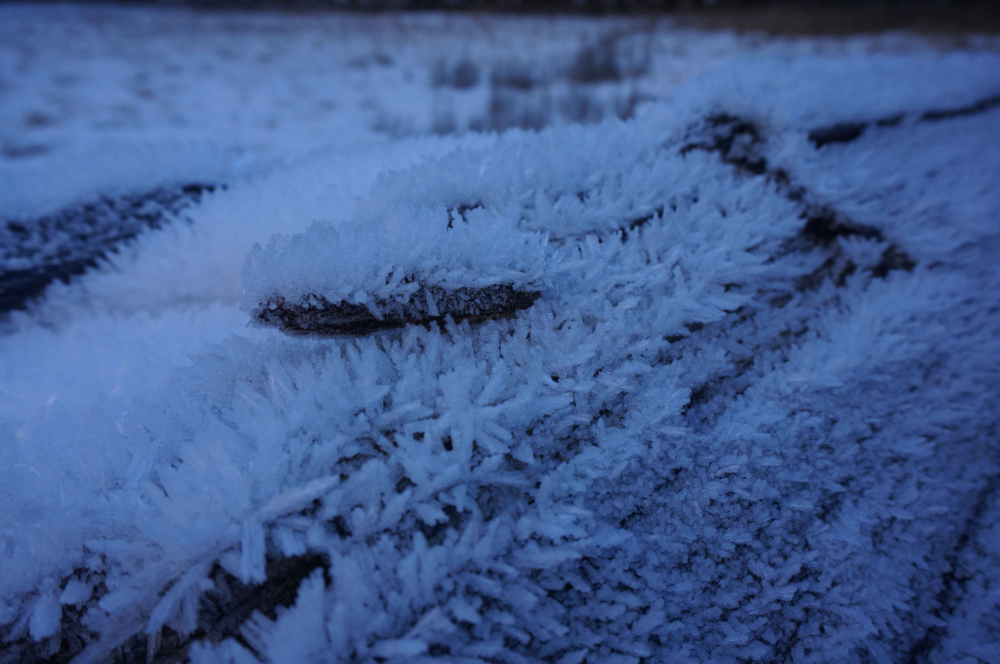
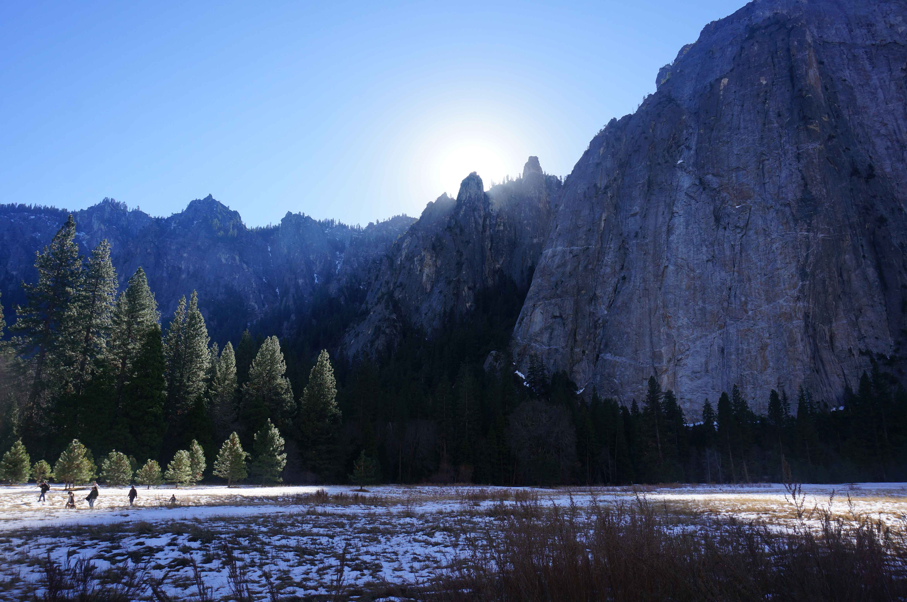
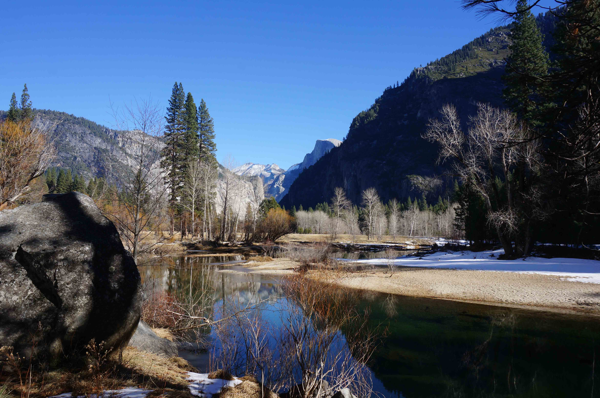

发信人: yyhh (yyhh), 信区: outdoor
标 题: 在Yosemite的五天六夜
发信站: 饮水思源 (2014年01月09日11:15:17 星期四)
终于来到了Yosemite.
第一次知道这个奇怪的地名是在国家地理杂志上，有一篇文章讲公园里的徒手攀岩者，看
了很震撼，如此不羁的自由，如此优雅地在生死的边界独舞。大约是那个时候开始接触攀
岩，热爱攀岩，至此一发不可收拾。后来看Reel Rock影展，Alex Honnold很萌很萌地出现
在我的世界中，舞台又是Yosemite，我知道了El Captain，Half Dome还有North Dome这些
传奇的岩壁。
层层铺垫，多年期待的堆砌，直到我真的站在了酋长岩之下，心情却异常平静，不过是见
个老朋友而已。冬日暖阳消融了草甸上的积雪，但空气依然是冷冽的。我45度角地仰望着
岩壁，仰望每一条岩缝，每一个可能的手点和脚点。它难以置信的庞大、高耸，占满了我
的视野。岩壁之下是萧瑟冻原，岩壁之上唯有朗朗碧空。
 screen.width - 200){this.width = screen.width - 200}">
见到Half Dome是第二天了。艰难地爬到Yosemite Fall的顶端，群山众壑尽在眼前，漫山
遍野是依然苍翠的杉木与披拂其上的皑皑白雪，冬季的旷野有一种静谧之美。Half Dome就
嵌在中间，很突兀地，群山之间，出现了这么一座光洁的岩壁。它呈现出无比简洁的几何
形态，而简洁本身往往蕴含着美，也孕育着力量。最能揭示世界本质的往往是简洁的公式
，最震撼人心的乐章往往有简明的乐思。冬季的公园游人并不多，登上瀑布之顶的更是鲜
少。我就享受着这个寂静的午后，寒意褪去几分，暖阳有些醉人，打在层层叠叠的山峦上
。山谷间的草甸有一道明显的分界线，光照之处积雪消融，一片橙黄；未及之处冰雪依旧
，一片白洁。回过来看岩壁，觉得越发迷人。
 screen.width - 200){this.width = screen.width - 200}">
我因为攀岩者的故事而了解一座岩壁，却不曾意识到岩壁本身就是如此纯粹的美。由百万
年前冰川作用切削而成的岩壁，在千百年间矗立于此，何曾因为人类的攀岩而改变过呢。
我愿意把这里的岩壁当成艺术品来欣赏，它没有流光溢彩，但朴实本真；它并非精致玲珑
，但粗犷雄浑。就这么淋漓尽致地展现着自然界的气魄。
我也迷恋攀岩，攀岩依托于岩壁，在有限的空间创造出无限的精彩。攀岩需要力量但不崇
尚力量，事实上它优雅精致，纤毫必争但也不乏狂野之质，就像Adam Ondra的咆哮所彰显
的那样。它的自由更令人痴迷，自由的极致就是徒手攀岩，一双岩鞋，一包粉袋，一个世
界。
有时候我会想攀岩者与岩壁是一种完美的结合，岩壁浩瀚，攀者渺小；岩壁沉稳，攀者灵
动；岩壁能够屹立于悠远的时空，而一个攀岩者的鼎盛时间不过是一生中的十几年而已。
因其反差，才觉得两者的结合是如此迷人。亘古以来自然演化在岩壁上留下的痕迹，成为
了攀岩者不可缺少的手点和脚点，这个过程本身就有种天人合一的感觉。
遗憾的是，并没有见到有人攀岩El Captain或是Half Dome，也没有偶遇Honnold合影要签
名。抱石的人倒是零零星星的有，营地边就有一块硕大的砾石，四五米高，上面有十几二
十条线路，其中一条叫Midnight Lightning的据说世界闻名，在抱石史上有里程碑式的意
义，V8难度，起步之后就看不见点了…很多人在尝试一条很有意思的线路，纠结的不行，
我也就是摸摸岩点，感受感受而已了。
 screen.width - 200){this.width = screen.width - 200}">
剩下的时间便是在山谷各处徒步了，冬日的峡谷是凛冽阴郁的，处处透着一种肃杀的美。
 screen.width - 200){this.width = screen.width - 200}">
有一天沿着冰河徒步，山谷之间一片凄清，空气仿佛冻结。走在冰雪封冻的草甸上，每一
脚都踩出清澈的脆响，好像把空气振裂一般。沿着蜿蜒的河流零零星星地长着林木，树叶
早已凋零，赤红的枝干在冰河雪野中分外醒目。缘溪而行，凄神寒骨，悄怆幽邃。人都冻
麻木了却不想离开，因为这里萧瑟的景象是如此动人。还有每天晚上回营地的路上穿过一
片树林，林间一片幽暗，只有头灯的光亮与头顶的星辰。第一天走这段路感到恐惧，但第
二天，第三天渐渐的就开始享受这刻短暂的宁静，这片璀璨的星河。然后会想到《雪国》
的最后一句话，“银河好像哗啦一声,向心坎上倾泻了下来”。
但也有那些明朗的瞬间。每天中午过后，阳光终于透过高耸的岩壁照射到峡谷，也就是在
这一天三四小时的日照下冰雪消融，游人如织，处处欢声笑语，人们都尽情地享受着晴朗
的午后，享受着每一天的平和安宁，这片荒野又何尝不是乐土。
 screen.width - 200){this.width = screen.width - 200}">
此时贯穿峡谷的河流也解冻了，天地之间一片澄明， 风烟俱净，天山共色。
 screen.width - 200){this.width = screen.width - 200}">
在这里的生活简简单单，每天随着日出去徒步，在日落之前回来，去旅馆腐败一顿，蜷缩
在睡袋里度过寒冷的夜晚，周而复始，但每一天都是全新的体验，踏上不曾涉足的航迹，
看到不曾见识的风景。很纯粹，很充实，很满足。
坐车离开峡谷的时候一身疲倦。最后看了眼晨曦下的Half Dome，恍若初见。世界很大，要
攀登的又何止是几座岩壁呢。
------------------------------------------------------------------------
Yosemite有800多英里的徒步线路，漫山遍野全是线路，我一天就走10多英里，五天不过走
了零头的零头。有一条著名的John Muir Trail穿越整个公园，全程200多英里，一个月才
能完成，蔚为壮观，如果有机会，以后一定会来尝试。受客观条件限制，到底没有上El C
aptain，也没有上Half Dome，很遗憾（喂，就是体能挫嘛，不要找借口…）。一个学期不
跑圈爬楼后果很严重，体能训练果然还是要坚持。
报报流水账，简单介绍几条峡谷的经典线：
Upper Yosemite Fall Trail
Camp4—Upper Yosemite Fall---Yosemite Point---Camp4(9.6mile)
爬升：2630feet
很赞的线路，即使是轻装爬起来也并不轻松，到一定海拔之后就是乱石堆，欲死欲活的。
不过视野极赞，瀑布，裸岩。勉勉强强2小时登顶，感觉还不错，其实再多走几英里就可以
到El Captain的顶上，要是走到的话就很完美了。后来想想来趟yosemite不容易，还暴走
自虐不是想不开么，于是理所应当地在Yosemite Point腐败了一下午~
Half Dome Trail
Happy Isles—Nevada Fall---Little Yosemite Valley---Illilouette Fall(未到达)--
-Happy Isles(15.1mile)
爬升：2000feet
本来是想一口气干到Half Dome上的(16mile),可惜登顶的缆绳在冬天被拆了，有点扫兴，
也就无心走到穹顶下面了。理论上整条线在冬天都是不允许走的，不过我华丽丽的无视了
。果然道路上都是冰坨坨，走一步滑三步，除此以外都比较友好。不过一天走30多公里山
路还是很累人的。有一段没在预定时间完成就放弃了，果然年纪大了就是保守。。
Glacier Point Trail
Camp4---Glacier Point---Camp4(10.2mile)
爬升：3200feet
这个是纯爬山了，可能是前一天干的太过了，爬到山顶的时候感觉快昏过去了。登顶耗时
2小时15分，感觉还OK。海拔高的地方路都结冰了。
装备：
来美国啥装备也没带，准备的着实蛋疼，但总算东拼西凑地把基本装备搞齐了。特别感谢
王脑残的小鹰包，草包子的充气垫，msr的帐篷很高大上，好像终于告别了穿一坨翔，背一
坨翔，踩一坨翔出线的日子。只是机场收了用了两年的瑞士军刀，至今为此遗憾。
食物：
美帝居然没有压缩饼干这种神器（户外店的工作人员还调戏我说世界上怎么会有这么神奇
的饼干…），只好买了一堆很流行的cliff饼干，比士力架有嚼头，不过吃了一个礼拜也快
吐了。没锅没炉头，于是每晚名正言顺的去餐厅腐败，只是贵，实在是贵。
Camping:
在著名的Camp4住了6个晚上，主要是便宜（5刀一晚），其实我一分钱也没付（最后一天收
帐的时候才发现上面贴了催款的条，于是我淡定的收完帐走人了，好像给国人丢脸了…）
。附近就是一大片抱石区，每天都跑去看线路，攀不动也可以瞎起劲嘛。气候还是宜人的
，冬天最低也就0度上下了（出发之前一个老兄说这里-15度，当场吓尿，后来估摸着他是
逗我玩的）。旁边就有旅店，每天晚上去蹭wifi蹭暖气不亦乐乎，实在腐败透了。
----------------------------------------------------------------------------最
后吐槽一下bbs坑爹的贴图。
--
※ 来源:·饮水思源 bbs.sjtu.edu.cn·[FROM: 107.19.188.169]
|